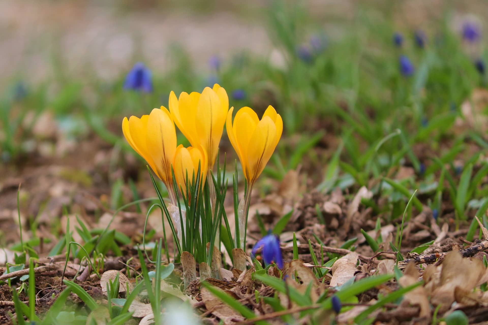

Крокус
В природе насчитывается более 90 видов крокусов.
По окраске их делят на 3 группы: белые, однотонные (в лиловых оттенках) и сетчатые.
Люпин
Род растений из семейства Бобовые.
Представлен однолетними и многолетними травянистыми растениями, полукустарничками, полукустарниками, кустарниками.
Примула
Многолетнее травянистое растение, вид рода Первоцвет.
Растение встречается в лесной и лесостепной зонах почти по всей Европе, в том числе в Европейской части России.